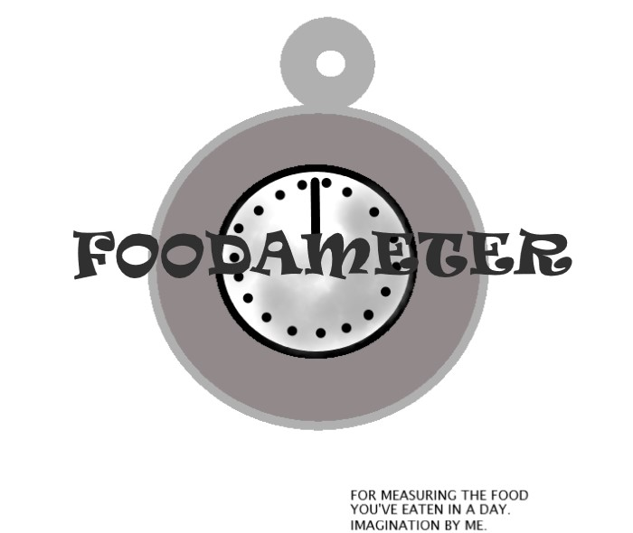

﴾BACKSTORIES OF ASSIGNMENTS FROM CALIFORNIA INSTITUTE OF ARTS﴿
-

Foodameter
Made this through imagination. It was an assignment for making imaginary things that you
would like to have made some time in future. I made this cooonotative image based on that. This foodameter will help to measure how much food
has been consumed by a person. We have apps for that but those are quite vague. Thismachine will give a true answer.
-

Business Cards Project
We were
to first make monograms using our initials and then make proper business cards arranging all the elements together including a monogram, some card information and lastly some design. I made this on Inkscape.
-
Pattern Design
This project was to make a pattern design using repetitions. I made this on Inkscape.
-
A Summary on Georgia
This assignment was to research on any one typeface from a given list of typefaces and write two to three paragraphs about it, while
using typography priniciples to write the assignments.
-

Elements
This was to make some arrangements using six main elements of graphic design.
-

Better Safe Than Sorry image
This assignment also wanted us to make a connotative image using a scene. So I made this. It was made directly using a mouse so the image isn't very good and it was when I first started with graphic designing.